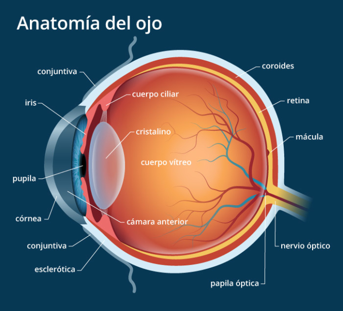

<section class="oe_container oe_dark">
	<div class="oe_row oe_spaced">
        <div class="oe_span12">
            <h2 class="oe_slogan text-center">Gestion de Clinicas Opticas</h2>
        </div>
        <div class="oe_span6">
            <p class='oe_mt32 text-justify'>
            Este  modulo permite utilizar gestionar las consultas de los Pacientes de una Clinica Optica.</p>
            <h3>Funcionalidad</h3>
            <p>
                Para poder ingresar a esta nueva aplicacion debemos ingresar al menu Optica en la pantalla principal.
            </p>
            <p>Permite Gestionar:
                <ul>
                    <li>
                        Consultas
                    </li>
                    <li>
                        Llevar un Historial
                    </li>
                    <li>
                        Gestion de Citas
                    </li>
                    <li>
                        Directorio de Pacientes
                    </li>
                </ul>
            </p>
        </div>
        <div class="oe_span6">
            <div class="oe_span6 text-left">
                
            </div>
        </div>
        
    </div>
</section>
